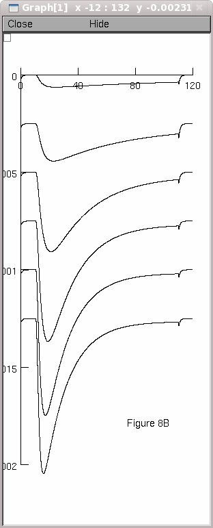

This is the readme for the model associated with the paper: Lee SC, Hayashida Y, Ishida AT (2003) Availability of Low-Threshold Ca2+ Current in Retinal Ganglion Cells J Neurophysiol 90:3888-3901 The T-type Ca2+ channel mod file written by Yuki Hayashida (a modified version of the T channel from Serrano et al. 1999) was supplied by Dr Ishida. Usage: Auto-launch from ModelDB and click the start button to generate Figure 8B from the paper. Or download and extract the archive and then under Linux: ------ compile the mod files with nrnivmodl and then type "nrngui mosinit.hoc" Mac OS X: --------- drag and drop the extracted folder onto the mknrndll icon and then drag and drop the mosinit.hoc file onto the nrngui icon mswin ----- run mknrndll, traverse to the extracted folder and click to make the nrnmech.dll. In windows explorer traverse to the extracted folder and double click the mosinit.hoc file. Once the simulation is started press the start button. In any case you should see a figure that looks like: 